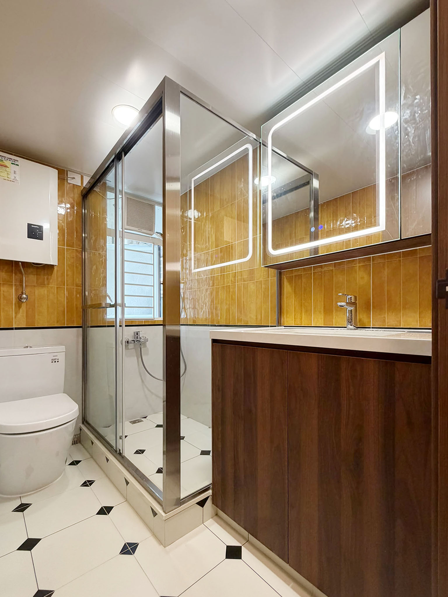
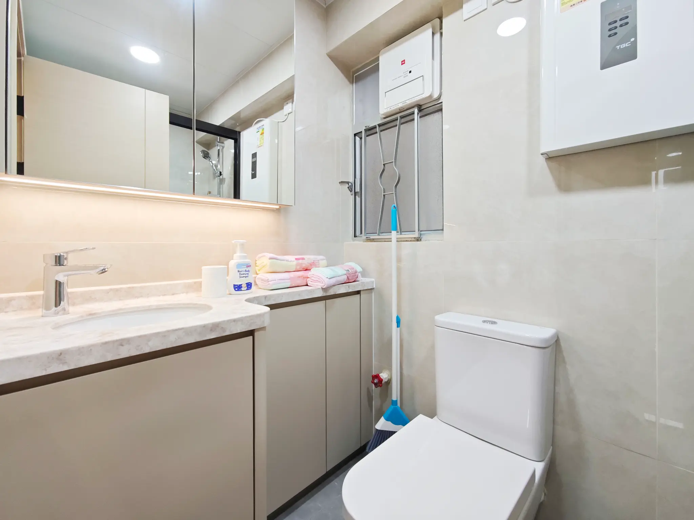

Bathroom Renovation in Hong Kong: Waterproofing, Ventilation and a Layout That Lasts

ECHOUSE original project photography — Robinson Place. A compact shower enclosure, window and tiled wet area can be planned as one coordinated bathroom zone.
A bathroom is one of the smallest rooms in many Hong Kong flats, yet it asks a great deal of a renovation. It needs to cope with daily moisture, limited circulation, storage, cleaning, lighting and the practical realities of plumbing and drainage. A successful bathroom does not depend on making it look larger through a single design trick. It comes from making the room easy to use at 7 a.m., easy to clean after a long week and resilient enough to remain comfortable over time.
For English-speaking homeowners, the first useful shift is to stop treating the bathroom as a catalogue of isolated products. The basin, shower screen, tile, fan, mirror cabinet and towel rail all share a small footprint. They should be planned as one coordinated wet-area system. That approach gives you a stronger design brief, a clearer quotation and fewer decisions left to chance on site.
1. Begin with the existing room, not the mood board
Before discussing finishes, document the room you already have. Measure clear floor space, door swing, window position, ceiling height, pipe boxing, the drain location and any service access that needs to remain reachable. Notice where water naturally lands when the shower is used, where a towel is likely to be hung and whether two people can move through the room without repeatedly colliding with the vanity or door.
This is especially important in older flats, where a neat-looking drawing can hide uneven walls, awkward columns, existing pipe routes or a threshold that must be treated carefully. Take photographs before strip-out and identify what is confirmed versus what needs a site measurement after finishes are removed. It is easier to adjust a vanity width or tile set-out during planning than after a waterproofing sequence has started.
Simple household works such as laying tiles or replacing sanitary fitments can be exempt building works, but they still need to meet relevant safety and drainage requirements. The Buildings Department also notes that toilet, bathroom, kitchen and associated drainage alterations may fall within the Minor Works Control System, depending on the work. Treat this as a prompt to verify the actual scope with appropriate professionals and your building management, not as a reason to assume every bathroom change follows the same route.[1]
2. Make circulation work before adding storage
A compact bathroom becomes more pleasant when the circulation path is deliberate. The door should open without making the basin unusable. A person should be able to stand at the vanity, turn towards the shower and reach a towel without squeezing around projecting hardware. If there is a shower screen, decide whether it should slide, pivot or remain fixed according to the room’s real clearances rather than a showroom display.
The vanity deserves particular attention. A shallow model can preserve standing room, but it still needs enough internal depth for the items you use. Consider where a hairdryer, skincare, cleaning supplies, spare toilet rolls and laundry will actually live. A mirrored cabinet can add useful vertical storage, while an open niche may be better reserved for items that can tolerate dampness and remain tidy.
Avoid filling every wall merely because storage is possible. In a small bathroom, one well-proportioned cabinet, a clear mirror and a calm tile field often feel more considered than several competing shelves. If the room is shared, agree early on whether the priority is a larger shower, more enclosed storage, a wider basin or an easier cleaning route. The layout should reflect those daily priorities.
3. Treat waterproofing as part of the design brief
The finish you see is only the last layer of a wet-area renovation. Behind it are preparation, falls, drainage coordination, waterproofing, tile setting, sealant joints and the junctions around sanitary fittings. These items are not glamorous, but they are the areas where a short specification can create long-term uncertainty.
Ask your renovation team to explain the sequence in plain language. Clarify what is being removed, how the base will be prepared, how water will be directed towards the drain, which areas are treated as wet zones and when any water test or inspection is expected. The point is not to dictate a method without technical knowledge; it is to make the intended workmanship visible in the scope before the room is closed up.
The Buildings Department specifically notes that the waterproofing layer should be properly laid for alterations involving a toilet, bathroom, kitchen or associated drainage works, so that water seepage does not create a nuisance in the flat below.[1] This is a useful reminder that a bathroom design should be judged not only by its tile colour, but also by how well its unseen work is planned, inspected and documented.
Keep the quotation precise about what is included. “Bathroom waterproofing” is too vague on its own. A better description identifies the preparation work, the treated areas, the proposed sequence, the interface with drains and shower screens, the intended testing or inspection arrangement, and how any pre-existing dampness or substrate repair will be handled. If something cannot be confirmed until after demolition, make that a clearly priced provisional item rather than an invisible assumption.

ECHOUSE original project photography — Robinson Place. The shower screen, floor finish and vanity zone show why wet-area junctions deserve early attention.
4. Plan ventilation and lighting before the ceiling is closed
A bathroom can be attractive and still feel uncomfortable if it is dim, humid or difficult to ventilate. Start with its natural conditions. Does the room have a window? Does it already rely on mechanical extraction? Is there a logical place for task lighting at the mirror, softer general light for the room and lighting that does not create harsh shadows when shaving or applying make-up?
The Buildings Department explains that bathrooms and toilets are generally expected to have natural lighting and ventilation through windows. A so-called dark bathroom, relying on artificial lighting and mechanical ventilation, involves specific requirements and should be assessed with professional advice rather than treated as a purely decorative layout change.[1] In practical terms, this means ventilation is an early planning question, not a final fixture choice.
Choose materials with the room’s moisture and cleaning routine in mind. Larger tiles can reduce grout lines, but they need to work with the room’s fall and proportions. Matt or textured surfaces may be easier to live with in selected floor zones, while highly polished finishes can make water marks more obvious. The best selection is one that suits the homeowner’s maintenance habits, the room’s light and the installation detail—not simply the latest showroom look.

ECHOUSE original project photography — Laguna City Phase One. A compact bathroom benefits from coordinated mirror lighting, ventilation and shower-screen planning.
5. Keep access, maintenance and future repairs realistic
A thoughtful bathroom leaves room for future maintenance. Ask where key valves, traps, concealed cisterns or service connections can be accessed if they need attention. This does not mean exposing everything. It means avoiding a beautiful but fragile solution that requires extensive demolition for a routine repair.
Use sealant joints, trim details and transitions deliberately. A change from floor tile to wall tile, shower glass to wall, or vanity top to tiled splashback should look intentional and be capable of normal movement and cleaning. If the existing building has any history of dampness, staining or drainage issues, do not assume new tiles alone resolve it. Record the condition and seek a clear diagnosis before covering it.
Your building’s deed of mutual covenant, house rules and management-office procedures may also affect working hours, lift protection, debris handling, water shut-off arrangements or consent requirements. The Buildings Department advises owners to check these documents and the relevant approved plans before interior work begins.[1] Good coordination is not an administrative extra; it is part of protecting the project schedule and your relationship with neighbours.

ECHOUSE original project photography — Fu Hong Garden. Built-in vanity storage and a clearly defined shower zone support everyday cleaning and maintenance.
Frequently asked questions
Can I move fixtures during a bathroom renovation?
It may be possible, but the effect on drainage, pipe routes, ventilation and approved layout needs to be understood first. Ask for a site-based assessment and clear scope rather than relying on a generic plan.
Are larger bathroom tiles always better in a small Hong Kong flat?
Not always. Larger tiles can create a calmer surface, yet the room’s dimensions, drainage falls, cuts at edges and slip resistance still matter. Choose proportions that work with the actual room.
What should I ask for before waterproofing is covered up?
Ask for the planned sequence, the areas to be treated, the drainage and shower-screen junction details, any testing arrangement, and a record of the work stage before it is concealed.
Do I need to check with building management?
Yes. Even when the works appear straightforward, management requirements may cover access, working hours, debris removal, water shut-off and protection of common areas.
A compact room can still feel generous
The strongest Hong Kong bathroom renovations are rarely the ones with the most finishes. They are the ones that make the morning routine smoother: enough light at the mirror, a clear route through the room, sensible storage, durable wet-area details and a plan for the things you cannot see once the tiles are installed.
Planning a bathroom renovation in Hong Kong? ECHOUSE DESIGN can help you turn daily habits, existing site conditions and material preferences into a clearer renovation brief before the work begins. Book a Free Consultation.
Plan with a clearer brief.
Speak with ECHOUSE DESIGN about a practical renovation direction for your Hong Kong home.
BOOK A FREE CONSULTATIONReferences
[1] Buildings Department — Alteration and Addition Works in Domestic Premises
[2] Housing Bureau — General Guidelines on Home Renovation Works inside Domestic Premises